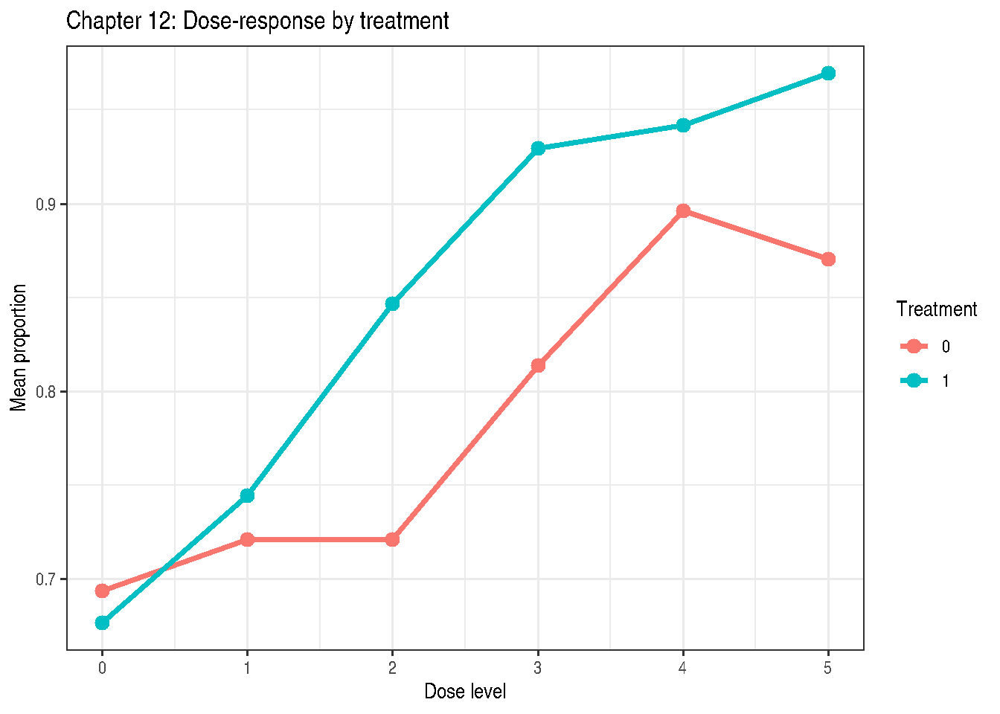

Chapter 12: Rates and Proportions
Beta Regression and Binomial GLMMs for Rates
2026-05-12
Source:vignettes/chapter-12-rates-proportions.qmd
1 Overview
Chapter 12 addresses responses that are proportions or rates — either continuous values strictly in \((0, 1)\) (Section 12.6) or binomial counts with a fixed denominator (Section 12.3).
Two primary approaches:
- Beta GLMM: models a continuous proportion using the Beta distribution with a logit link; accommodates between-run variability via random effects
- Binomial GLMM: models the number of successes out of a fixed total with a nested or split-plot random-effect structure
2 Example 12.1 — Continuous Proportions: Beta GLMM (Section 12.6.2)
DataSet12.1: 2 treatments × 12 runs × 6 dose levels = 144 observations. Response is a continuous proportion in \((0, 1)\).
'data.frame': 144 obs. of 4 variables:
$ trt : Factor w/ 2 levels "0","1": 1 1 1 1 1 1 1 1 1 1 ...
$ run : Factor w/ 24 levels "t0r1","t0r10",..: 1 1 1 1 1 1 2 2 2 2 ...
$ dose : int 0 1 2 3 4 5 0 1 2 3 ...
$ proportion: num 0.688 0.957 0.863 0.74 0.89 ...
## Mean proportion by treatment and dose
with(DataSet12.1, tapply(proportion, list(trt, dose), mean)) 0 1 2 3 4 5
0 0.6939107 0.7212031 0.7210461 0.8140771 0.8964916 0.8705738
1 0.6766403 0.7444827 0.8466202 0.9294818 0.9419682 0.9697002
ggplot(DataSet12.1, aes(x = dose, y = proportion,
colour = trt, group = trt)) +
stat_summary(fun = mean, geom = "line", linewidth = 1.2) +
stat_summary(fun = mean, geom = "point", size = 3) +
labs(title = "Chapter 12: Dose-response by treatment",
x = "Dose level", y = "Mean proportion",
colour = "Treatment") +
theme_bw()
2.1 Beta GLMM via glmmTMB
if (requireNamespace("glmmTMB", quietly = TRUE)) {
fit_beta <- glmmTMB::glmmTMB(
proportion ~ trt * dose + (1 | run),
family = glmmTMB::beta_family(link = "logit"),
data = DataSet12.1
)
summary(fit_beta)
} Family: beta ( logit )
Formula: proportion ~ trt * dose + (1 | run)
Data: DataSet12.1
AIC BIC logLik -2*log(L) df.resid
-327.8 -310.0 169.9 -339.8 138
Random effects:
Conditional model:
Groups Name Variance Std.Dev.
run (Intercept) 0.1782 0.4222
Number of obs: 144, groups: run, 24
Dispersion parameter for beta family (): 10.1
Conditional model:
Estimate Std. Error z value Pr(>|z|)
(Intercept) 0.76428 0.18528 4.125 3.71e-05 ***
trt1 -0.09428 0.26413 -0.357 0.721
dose 0.25377 0.05021 5.054 4.33e-07 ***
trt1:dose 0.32889 0.07601 4.327 1.51e-05 ***
---
Signif. codes: 0 '***' 0.001 '**' 0.01 '*' 0.05 '.' 0.1 ' ' 1
if (requireNamespace("glmmTMB", quietly = TRUE)) {
emm_beta <- emmeans::emmeans(fit_beta, ~ trt | dose,
at = list(dose = c(0, 5)),
type = "response")
print(emm_beta)
emmeans::contrast(emm_beta, method = "pairwise")
}dose = 0:
trt response SE df asymp.LCL asymp.UCL
0 0.682 0.04020 Inf 0.599 0.755
1 0.662 0.04220 Inf 0.575 0.739
dose = 5:
trt response SE df asymp.LCL asymp.UCL
0 0.884 0.02120 Inf 0.836 0.920
1 0.973 0.00656 Inf 0.957 0.983
Confidence level used: 0.95
Intervals are back-transformed from the logit scale dose = 0:
contrast odds.ratio SE df null z.ratio p.value
trt0 / trt1 1.099 0.290 Inf 1 0.357 0.7211
dose = 5:
contrast odds.ratio SE df null z.ratio p.value
trt0 / trt1 0.212 0.066 Inf 1 -4.986 <0.0001
Tests are performed on the log odds ratio scale 3 Example 12.2 — Binomial Nested Factorial (Section 12.3.2)
DataSet12.2: 10 blocks × 6 treatments (factor A with 2 levels, factor B with 3 levels nested within A) = 60 observations. Response is count of successes f out of total n.
'data.frame': 30 obs. of 5 variables:
$ block: Factor w/ 10 levels "1","2","3","4",..: 1 1 1 2 2 2 3 3 3 4 ...
$ a : Factor w/ 2 levels "setA","setB": 1 1 1 1 1 1 1 1 1 1 ...
$ b : Factor w/ 3 levels "B0","B1","B2": 1 2 3 1 2 3 1 2 3 1 ...
$ f : int 9 9 8 13 10 10 14 14 15 6 ...
$ n : int 20 20 20 20 20 20 20 20 20 20 ... B0 B1 B2
setA 0.52 0.59 0.50
setB 0.28 0.33 0.48
fit_nb <- lme4::glmer(
cbind(f, n - f) ~ a / b + (1 + a | block),
family = stats::binomial(link = "logit"),
data = DataSet12.2,
control = lme4::glmerControl(optimizer = "bobyqa")
)
summary(fit_nb)Generalized linear mixed model fit by maximum likelihood (Laplace
Approximation) [glmerMod]
Family: binomial ( logit )
Formula: cbind(f, n - f) ~ a/b + (1 + a | block)
Data: DataSet12.2
Control: lme4::glmerControl(optimizer = "bobyqa")
AIC BIC logLik -2*log(L) df.resid
156.4 169.0 -69.2 138.4 21
Scaled residuals:
Min 1Q Median 3Q Max
-1.9511 -0.4279 0.0596 0.5048 1.2731
Random effects:
Groups Name Variance Std.Dev. Corr
block (Intercept) 0.1061 0.3257
asetB 0.6715 0.8194 -0.20
Number of obs: 30, groups: block, 10
Fixed effects:
Estimate Std. Error z value Pr(>|z|)
(Intercept) 0.08323 0.24966 0.333 0.73884
asetB -1.16210 0.50491 -2.302 0.02136 *
asetA:bB1 0.29114 0.28893 1.008 0.31362
asetB:bB1 0.27123 0.32916 0.824 0.40993
asetA:bB2 -0.08213 0.28659 -0.287 0.77444
asetB:bB2 0.99917 0.32356 3.088 0.00201 **
---
Signif. codes: 0 '***' 0.001 '**' 0.01 '*' 0.05 '.' 0.1 ' ' 1
Correlation of Fixed Effects:
(Intr) asetB asA:B1 asB:B1 asA:B2
asetB -0.494
asetA:bB1 -0.569 0.282
asetB:bB1 0.000 -0.342 0.000
asetA:bB2 -0.574 0.284 0.496 0.000
asetB:bB2 0.000 -0.357 0.000 0.534 0.000
optimizer (bobyqa) convergence code: 0 (OK)
Model is nearly unidentifiable: large eigenvalue ratio
- Rescale variables?
if (requireNamespace("car", quietly = TRUE)) {
car::Anova(fit_nb, type = "III")
}| Chisq | Df | Pr(>Chisq) | |
|---|---|---|---|
| (Intercept) | 0.1111518 | 1 | 0.7388367 |
| a | 5.2974165 | 1 | 0.0213571 |
| a:b | 12.3267596 | 4 | 0.0150798 |
## B(A) means on probability scale
emm_ba <- emmeans::emmeans(fit_nb, ~ b | a, type = "response")
print(emm_ba)a = setA:
b prob SE df asymp.LCL asymp.UCL
B0 0.521 0.0623 Inf 0.400 0.639
B1 0.593 0.0609 Inf 0.470 0.705
B2 0.500 0.0624 Inf 0.380 0.620
a = setB:
b prob SE df asymp.LCL asymp.UCL
B0 0.254 0.0831 Inf 0.126 0.446
B1 0.308 0.0923 Inf 0.160 0.510
B2 0.480 0.1060 Inf 0.286 0.680
Confidence level used: 0.95
Intervals are back-transformed from the logit scale 4 Comparing Approaches
| Approach | Distribution | When to use |
|---|---|---|
| Beta GLMM | Beta\((μφ, (1-μ)φ)\) | Continuous proportions in \((0,1)\); run-level random effects |
| Binomial GLMM | Binomial\((n, π)\) | Count/total with known \(n\); factorial or nested designs |
5 Key Takeaways
- Beta GLMM is the appropriate model for continuous proportions.
- Binomial GLMM is correct when the denominator \(n\) is a fixed count.
- Both models use the logit link, making linear predictors directly comparable.
- Random effects (run, block) account for over-dispersion and design structure.
6 References
Stroup, W. W., Ptukhina, M., and Garai, S. (2024). Generalized Linear Mixed Models: Modern Concepts, Methods and Applications (2nd ed.). CRC Press.
Ferrari, S., & Cribari-Neto, F. (2004). Beta regression for modelling rates and proportions. Journal of Applied Statistics, 31(7), 799–815.